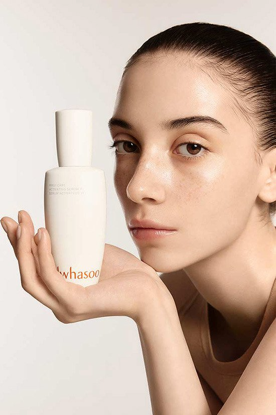
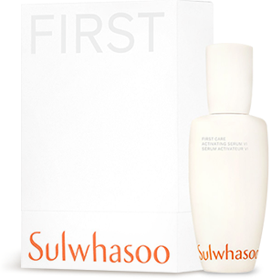
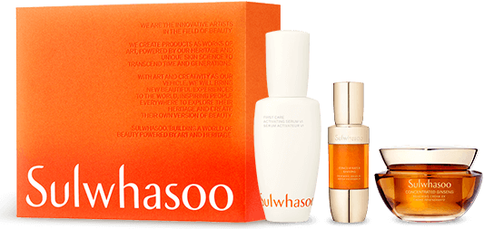

피부 능력을 깨우는 FIRST STEP
설화수 윤조에센스 6세대
FIRST CARE ACTIVATING SERUM VI
THE NEW
GENERATION
설화수 윤조에센스 6세개 출시
2023년, 설화수 브랜드의 시작과 함께한 윤조에센스가
6세대로 또 한 번 진화합니다.
인삼의 힘으로 더욱 강력해진 SULWHASOO MASTER
COMPLEX™
놓여있는 것만으로도 당신의 취향과 안목을
보여주는 새로운 디자인.
피부 능력을 깨워줄 6세대 윤조에센스를 지금 만나보세요.
윤조에센스 6세대
FIRST CARE ACTIVATING SERUM VI
피부 본연의 능력을 깨우는 퍼스트 에센스
60ml 105,000원60ml 105,000원
FIRST CARE ACTIVATING SERUM VI FILM
세안 후 순간, 그 놀라운 발견.
세안 후 피부 컨디션에 주목.
'당긴다'고만 생각했던 이 순간은
피부 노화가 시작되는 결정적 모멘트.
윤조에센스,
피부 능력을 깨우다.

윤조에센스,
피부 능력을 깨우다.
예술에 가까운 인삼 기술.
대지의 기운을 담은 정수, 인삼
설화수는 피부를 위한 인삼을 끊임없이 연구합니다.
윤조에센스 6세대는 인삼에 대한 독점 기술을 적용했습니다.
* 500여 시간의 자연 숙성 과정을 통해 피부 효능 사포닌을 강화시킨
설화수 독점 기술 성분 Lymphanax™는 윤조에센스의 핵심 성분을
부스팅하고, 피부 본연의 능력을 활성화시켜 줍니다.
피부에 활력을 주는 핵심 성분.
인삼의 힘으로 더욱 강력해진 윤조에센스의
SULWHASOO MASTER COMPLEX™*
-
사용 후 3일 만에**
건강한 피부층으로 유지시켜주는
'피부 턴오버'가 개선됩니다.손상된 피부 장벽이
빠르게 개선됩니다.2) -
사용 후 4주 후에**
10가지 피부 노화 징후3)를
개선합니다.피부 본연의 능력이
더 활성화됩니다.
- * 원료 선별, 독자적 가공법, 배합 비율, 제조 시간 등 수많은 데이터에 근거한 설화수의 독자 기술 성분
- ** 1. 시험 기간 : 2022.08.22~2022.10.25 | 2. 시험 대상 : 만 30~60세 여성 30명 3. 시험 기관 : (주)글로벌의학연구센터
- *** 1. 시험 기간 : 2022.08.22~2022.11.08 | 2. 시험 대상 : 만 20~60세 다인종 여성 33명 3. 시험 기관 : (주)글로벌의학연구센터
- 1) 피부 턴오버 개선 +10.24% | 2) 손상 장벽 개선 +37.62%
- 3) 피부 턴오버, 수분량, 장벽 기능, 주름, 리프팅, 모공, 윤기, 투명도, 피부결, 탄력
눈 깜빡할 사이
흡수.
피부와 친밀한 고유의 텍스쳐가
순식간에 흡수되어 세안 후
피부 컨디션을 빠르게 회복합니다.
설화수의
지속가능한 내일.
윤조에센스 6세대는
천연유래지수 94% *의 포뮬러,
유리 중량이 감축된 용기, 재활용 플라스틱 캡,
FSC 인증 용지를 사용합니다.
*ISO 16128 가이드라인에 따라 계산한 지수
다만, 이 지수는 식품의약품안전처의 천연 화장품 기준에 따른
천연 화장품에 해당한가는 의미가 아님
-
 윤조에센스 6세대
FIRST CARE ACTIVATING SERUM VI
-
 첫 설화수 세트
MY FIRST SULWHASOO SET
-
 설화수 베스트셀러 컬렉션
SULWHASOO BESTSELLERS